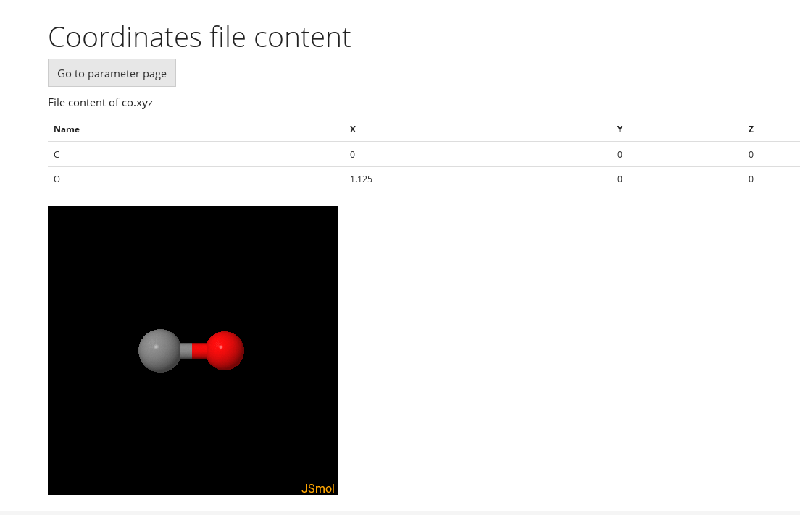
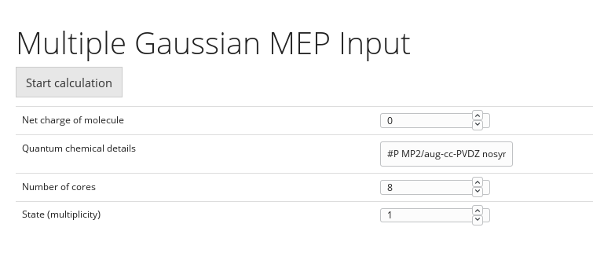
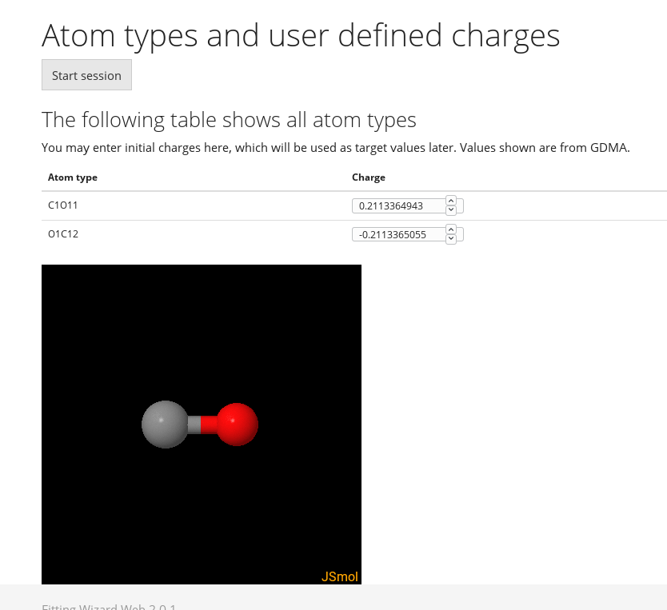
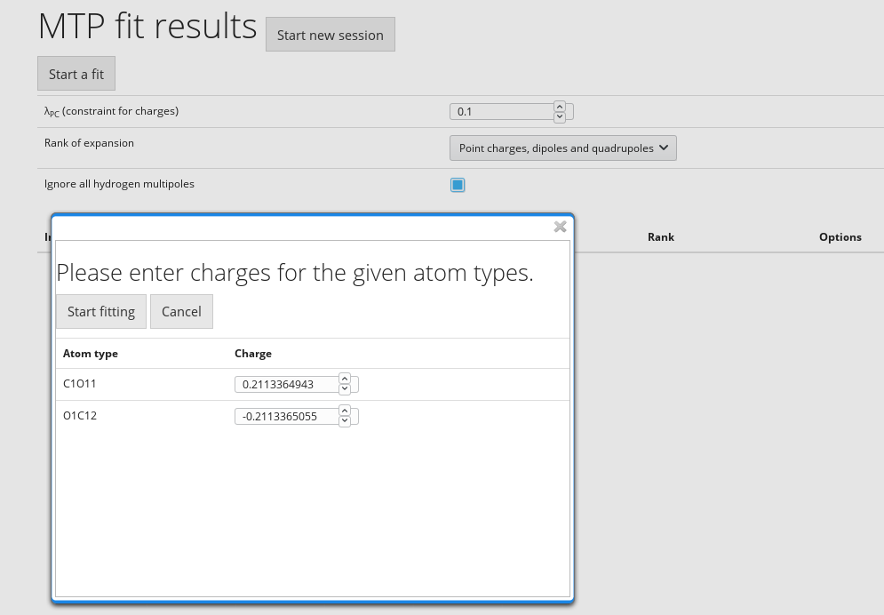
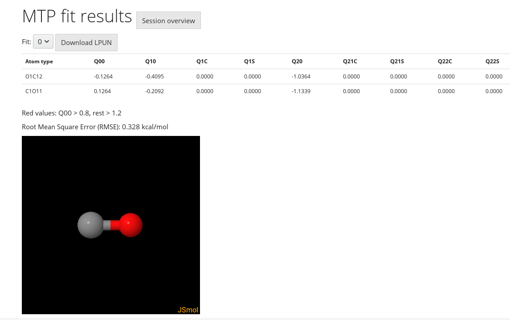

Fitting Web 2.0.1: Help
MTP Fit
The MTP Fit (multipole fit) code is used to
obtain atomic multipole moments in CHARMM "lpun" format
for use in subsequent molecular dynamics simulations. See
the original paper cited in the overview for more details,
but very briefly the approach is to take an optimized
molecule, use a quantum chemical (QM) calculation to
obtain the electrostatic potential on a grid around this
molecule to use as reference data, then use the molecule's
electron density with Stone's GDMA analysis to obtain an
initial guess for the atomic multipoles. Fitting then
proceeds by constraining charges to near GDMA values
within a user-defined tolerance and gradually refining the
multipoles to reduce the discrepancy between the QM
reference ESP and the ESP generated by the fitted atomic
multipole moments.
The basic workflow for multipole fitting in the Fitting Wizard is therefore as follows:
In more detail:
-
Upload molecule in xyz file format

The multipoles that are generated are strictly speaking optimized only for the geometry of the molecule that you upload. No geometry optimization or conformational sampling will be performed by the fitting wizard, so make sure that you select this geometry carefully before uploading. In addition, the MTPL routine in CHARMM relies on atom ordering to map the fitted multipole parameters to the atom types, coordinates and other parameters in the topology and PDB files for subsequent simulations. It is therefore highly recommended that you keep the atom ordering in your initial xyz file the same as the ordering in the residue definition in your topology file, and ideally also keep it the same in your coordinate / PDB files throughout to avoid possible confusion in assigning multipoles to the correct atom types and in correctly defining the local axis systems used to define multipole directionality.After uploading your file, you will be invited to check the geometry in a 3D viewing window before proceeding to the next step.
-
Specify QM calculation parameters

The “Gaussian 09” suite is currently the QM engine used to generate a reference electrostatic potential grid (“cube” file) to provide reference data for subsequent ESP fitting. The Fitting Wizard UI gives the option to select the desired level of theory by specifying only the command-line section of the Gaussian input file (see Gaussian manual for further details). The default value will run a calculation at the MP2/aug-cc-pVDZ level of theory. The number of cores requested for the job can be given (make sure you choose a value that is suitable for the cluster where the Gaussian job will be run, or simply leave the default value). The molecular charge and spin multiplicity are required for all QM calculations to define the electronic configuration.Once you submit the calculation a progress bar will keep you updated with which step of the process your job has reached. Note that generating the ESP grid can take some time for larger molecules, as the number of points to be evaluated scales roughly with the size of the molecule cubed. Aside from this Stone's “GDMA” program will be used to generate initial guess charges for each atom based on GDMA charge partitioning.
-

Clicking “proceed” once calculations have finished shows initial GDMA guess charges and a 3D molecule viewer window. Moving the mouse over each atom type in the list of atom types and GDMA charges will highlight the corresponding atom in the molecule viewer window to help with atom identification. Atomic charges can be altered by hand at this stage if desired, otherwise clicking “start session” will continue to the "fitting parameters" page. -

The λPC parameter is a requested “maximum deviation” (hard constraint) for the charge component of the fitted multipole moments from their initial GDMA (or user-defined) values. Note that initial charges can still be changed once fitting parameters have been defined before the fitting process begins by clicking “start a fit. Although λPC is meant as a hard constraint, if no solution is found that satisfies this constraint within a fixed number of fitting cycles a solution that violates the constraint will be presented, so be sure to check this once results have been generated if necessary.The rank of the expansion refers to the maximum multipole rank that will be fitted. CHARMM's MTPL module supports up to quadrupole, so atomic charges, charges plus dipoles, or charges plus dipoles plus quadrupoles can be selected.
The “Ignore all hydrogen multipoles” checkbox can be used to truncate the multipole expansion on hydrogen atoms at monopole (charge-only). This usually incurs little cost in terms of accuracy of the fit, but can significantly speed up subsequent MD simulations due to the reduced number of terms to be evaluated for electrostatic interactions.
Clicking “start a fit” will launch a pop-up window where the initial charges can be modified as necessary, otherwise clicking “start fitting” will begin fitting atomic multipole moments to the QM ESP reference data calculated in the previous steps.
-
Inspect fitting results and refine fitting parameters for further cycles as necessary

Once the fitting code has completed you can proceed to the results screen for this fit. The results screen shows the RMSE of the ESP fit with each fitted multipole component, and offers the chance to download the results in “lpun” format that can be used directly with the MTPL routine in CHARMM. If multiple fits have already been performed then the “Fit” dropdown menu allows you to select which fit results and files you'd like to view.Any multipole components that are highlighted red are simply larger than an arbitrary value of 0.8 a.u. for charges or 1.2 a.u. for higher order multipole components. Large multipole components can give good electrostatics during fitting, but could potentially lead to instability during simulations if two atoms with large multipoles come close enough to one another to overcome repulsive Lennard-Jones barriers. Results with larger charges should not necessarily be discarded, simply treated with caution and tested properly in MD simulations.
Clicking “Session overview” provides a summarized comparison of all fits that belong to the current session, providing the additional options to delete a fit (and with it the associated files stored on the server) or to perform an additional fit with new fitting parameters (note that all fits belonging to the session will be saved until “Start new session” is selected). Clicking “Show results” from the “Session overview” page will return to the detailed results view.
Note that your session should be saved even
after closing your browser window, so entering the same
username at a later time allows you to resume the session
where you left off.
Next: LJ Fit